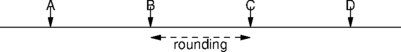
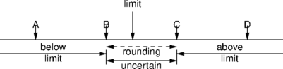

Note that the tone detector by default has an operating range of 250 Hz to 3406.25 Hz, which may be limited further when used with a particular input tone set by sm_adjust_input_tone_set() - see section on advanced rejection parameters below.
This document contains information that is necessary for applications that require to define their own sets of recognisable input tones. The second section, "advanced rejection parameters" is necessary only if very specific and exact frequency rejection criteria are to be met. Otherwise it can be ignored, and frequency detection will be guaranteed as stated.
In order to define a new set of recognisable input tones for a particular module, an application must define any additionally required pairs of input frequency coefficients through calls to sm_add_input_freq_coeffs(), and then make a call made to sm_add_input_tone_set() referencing these coefficients and also supplying extra parameters. The input frequency coefficients supplied by the application in calls to sm_add_input_freq_coeffs() specify an upper and lower frequency for a tone in the detection repertoire. In order to guarantee detection of edge frequencies, 15.625Hz should be added to the upper limit, and subtracted from the lower limit. Rejection is guaranteed for tones more than 15.625Hz outside of these modified limits. Detection and Rejection specifications can be made more accurate (see "Advanced rejection parameters"). As well as referencing previously defined input frequency coefficients, the following extra parameters must be specified in calls to sm_add_input_tone_set():
| Parameter | Description |
|---|---|
| req_third_peak | The maximum allowable power of a third frequency component, as a fraction of the maximum tone power. This is a form of noise level, which will annihilate tones with harmonic distortion. For default DTMF detection this is 0.0794 |
| req_signal_to_noise_ratio | The minimum allowable signal-to-noise power ratio, where "signal" is defined as approximately the energy contained in the two strongest frequency components (tones). For default DTMF detection this is 5 dB |
| req_minimum_power | The minimum allowable power of each individual tone. For DTMF detection the default is -36dBm0 |
| req_twist_for_dual_tone | The maximum allowed absolute difference, as a ratio, between the powers of the two detected tones. For default DTMF detection this is 10.0 |
Note that the values in the parameters above do not necessarily exactly reflect the specifications for detection (e.g. maximum absolute twist for DTMF detection is specified as 6dB). The only real way of meeting a specification exactly (as for the default DTMF coefficients) is by adaptive empirical testing.
Internally, tone frequencies are detected as integer multiples of 15.625Hz, plus an offset of 7.3125Hz. There is a maximum error of 15.625Hz in the detected frequency. This is illustrated by this diagram:

The frequencies which can be reported are A, B, C, and D. These are 15.625 Hz apart. A tone which falls between two may be reported as either of the two, so all tones in the region labelled "rounding" will be reported as either B or C, but it is not possible to determine which.
When a frequency limit (either upper or lower) is specified, this means that there is a region where it is uncertain whether tones in that region will be considered to be above or below the limit. This diagram shows a limit between B and C:

Any tones with frequencies below B are definitely reported as being below the limit: any tones with frequencies above C are definitely reported as being above the limit: however it is uncertain whether a tone between B and C will be considered to be above the limit (if it happens to be rounded to C) or below the limit (if it happens to be rounded to B). For example, if you configure Prosody to recognise a tone between 1000Hz and 2000 Hz, the effect is:
| Received tone, f | Result |
|---|---|
| f ≤ 992.1875 | reject - too low |
| 992.1875 < f < 1007.8125 | uncertain |
| 1007.8125 ≤ f ≤ 1992.1875 | accept |
| 1992.1875 < f < 2007.8125 | uncertain |
| 2007.8125 ≤ f | reject - too high |
Awareness of the actual detection frequencies allows more accurate
limits to be set, and allows performance to be predictable. A
command-line utility bandaid.pl is supplied (in the
diag directory) which shows the actual detection
and rejection regions for any arbitrary frequency band limits.
By default, with user defined sets of input tones, the operating range
of the tone detector is set to its maximum range of 250Hz to 3406.25Hz.
More restrictive low and high cut off frequencies may be set up by
invoking
sm_adjust_input_tone_set()
for parameter kAdjustToneSetFPParamIdStartFreq or
kAdjustToneSetFPParamIdStopFreq.
The granularity of the lower and upper limits is 31.25 Hz, so actual
limit frequencies used by detector will be nearest multiples of 31.25 Hz
less than the specified limit frequency.
There are three tone detection modes (see sm_listen_for). The mode affects the way in which time information is used to affect detection of digits. This is important for talk-off rejection. Talk-off refers to the erroneous triggering of a tone detection by speech or some other signal. One standard test, which we call "the Mitel test" uses side 2 of Mitel's "DTMF Receiver Test Cassette", part number CM7291. For this test, a talk-off figure of less than 30 is considered to be acceptable.
The recommended mode is kSMToneEndDetectionMinDuration40.
The following modes notify the application as soon as a tone is detected by the DSP.
Modes kSMToneEndDetectionNoMinDuration,
kSMToneEndDetectionMinDuration64, and
kSMToneEndDetectionMinDuration40 are equivalent to the
kSMToneDetection* modes, except that the application is
notified only when the tone has ceased. This is often preferable in an
interactive application, because a user may hold a tone button for a
long time and would therefore be unable to hear the response to the tone
for the duration of the key press.
Modes kSMToneLenDetectionNoMinDuration,
kSMToneLenDetectionMinDuration64,
kSMToneLenDetectionMinDuration40 are equivalent to the
kSMToneEndDetection modes. They notify the application when
the tone ceases, and the tone information acquired through
sm_get_recognised()
incorporates the duration of the detected tone (granularity 32ms). For
details of retrieving this information see documentation for
sm_listen_for().
The three basic detection modes provide different sensitivities to short tones (each with a slightly different trade-off between sensitivity and talk-off performance). Further, if the application is susceptible to poor-quality DTMF signals, the application developer can apply further restrictions on the durations of tones and spaces. The API call sm_adjust_input_tone_set() allows the following parameters to be adjusted in a tone-set:
These parameters apply globally to a Prosody module, for any channels detecting tones using the tone set to which the parameters were applied. The following rules apply:
kSMToneLenMinDuration64 or
kSMToneEndMinDuration64.
kSMToneLenDetectionMinDuration64 is used, the detected
duration is affected as follows: the duration reported for a tone
includes any spaces shorter than MonOffTime and any tones shorter
than MinOnTime.